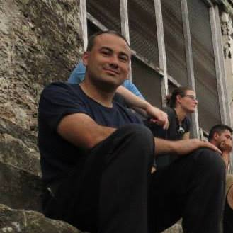
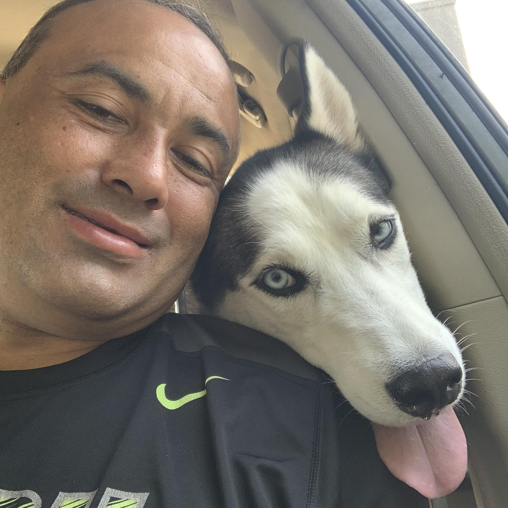

Senior Software Engineer & Technology Innovator
A native Alaskan with a passion for building innovative technology solutions that make a real difference in people's lives. From cybersecurity to cloud architecture, I bring technical expertise and creative problem-solving to every challenge. I'm a regular attendee at DEFCON and have extensive experience building and fixing cars, houses, computer hardware, software, networking, and electronic components.
Protecting digital assets and building secure systems that keep businesses safe from evolving threats.
Designing scalable cloud solutions using AWS, Azure, and modern infrastructure practices.
Creating robust applications with clean code, best practices, and cutting-edge technologies.
Growing up in Alaska taught me the value of resilience, innovation, and community. These principles guide my approach to technology and problem-solving every day. I believe in building solutions that not only work well but also make a positive impact on people's lives.
One of my most meaningful experiences was leading an engineering project that brought potable water to a remote village outside Antigua, Guatemala. This humanitarian effort combined technical expertise with compassion, showing how technology can truly transform lives and communities in need.
Today, I continue to apply that same passion for making a difference through my work in cybersecurity, cloud computing, and software development. Whether I'm protecting critical infrastructure, designing scalable systems, or sharing knowledge through tutorials, my goal remains the same: to use technology to create a better, safer, more connected world.
Leveraging cutting-edge artificial intelligence and machine learning technologies to build intelligent systems that solve complex problems. From natural language processing to computer vision, I create AI solutions that enhance productivity and drive innovation.
Custom ML models for predictive analytics and automation
Advanced NLP for text analysis and chatbot development
Model Context Protocol integration for seamless AI workflows
My faithful Siberian Husky companion who reminds me daily of the importance of loyalty, adventure, and embracing the wild spirit of Alaska. Nanook is my coding buddy and inspiration for staying curious and exploring new frontiers in technology.